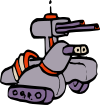

AUTONOMOUS SYSTEMS
Autonomy
Navigation, coverage, decentralized coordination, and learned decision-making systems built for robotics environments ranging from agricultural exploration to multi-agent swarm behavior.
This domain collects autonomy-focused systems centered on policy learning, decentralized robot behavior, field coverage, and reflexive navigation. Each system is presented as a standalone engineering artifact with its own visual identity, project summary, and repository link.
Autonomy Systems Archive
Click any panel to open the corresponding GitHub repository.

AgriDroneRL
A vision-based reinforcement learning project for autonomous drone navigation over agricultural fields using a custom environment and an NDVI-style vegetation proxy. The system compares PPO, DQN, and A2C under sparse first-visit rewards, focusing on coverage efficiency, exploration behavior, and vegetation-aware decision-making.
Open RepositoryPPO Driven Swarm Control
A hybrid multi-robot autonomy framework that combines PPO-based local navigation with classical swarm-control structure, including artificial potential fields, graph-based consensus, and stochastic role switching. The project shows how pure RL can be extended into interpretable and scalable swarm behavior through theory-guided system design.
Open RepositorySwarmNavigator
A decentralized multi-agent reinforcement learning framework for 2D gridworld coverage and obstacle avoidance. The system studies collision-aware reward design, swarm-level exploration efficiency, and the behavioral differences between single-agent and multi-agent strategies under PPO and DQN formulations.
Open RepositoryEventReflex Drone Navigation
A minimal neuromorphic autonomy study demonstrating event-based perception and spiking-inspired reflex navigation in a lightweight UAV-style environment. Instead of dense vision or learned policies, the system relies on temporal contrast, leaky integration, and fast reflex-like action selection for interpretable closed-loop behavior.
Open RepositoryFirst Order Boustrophedon Navigator
A ROS2-based lawnmower coverage system using first-order motion dynamics and PD control for structured area traversal. The project emphasizes trajectory quality, cross-track error analysis, and quantitative validation of systematic coverage behavior in a robotics simulation workflow.
Open Repository